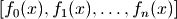
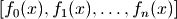

Mpmath basics¶
In interactive code examples that follow, it will be assumed that the main contents of the mpmath package have been imported with “import *“.
>>> from mpmath import *
Number types¶
Mpmath provides the following numerical types:
Class Description mpf Real float mpc Complex float mpi Real interval matrix Matrix
The following section will provide a very short introduction to the types mpf and mpc. Intervals and matrices are described further in the documentation chapters on interval arithmetic and matrices / linear algebra.
The mpf type is analogous to Python’s built-in float. It holds a real number or one of the special values inf (positive infinity), -inf (negative infinity) and nan (not-a-number, indicating an indeterminate result). You can create mpf instances from strings, integers, floats, and other mpf instances:
>>> mpf(4)
mpf('4.0')
>>> mpf(2.5)
mpf('2.5')
>>> mpf("1.25e6")
mpf('1250000.0')
>>> mpf(mpf(2))
mpf('2.0')
>>> mpf("inf")
mpf('+inf')
The mpc type represents a complex number in rectangular form as a pair of mpf instances. It can be constructed from a Python complex, a real number, or a pair of real numbers:
>>> mpc(2,3)
mpc(real='2.0', imag='3.0')
>>> mpc(complex(2,3)).imag
mpf('3.0')
You can mix mpf and mpc instances with each other and with Python numbers:
>>> mp.dps = 15
>>> mpf(3) + 2*mpf('2.5') + 1.0
mpf('9.0')
>>> mpc(1j)**0.5
mpc(real='0.70710678118654757', imag='0.70710678118654757')
Prettier output can be obtained by using str() or print, which hide the mpf and mpc constructor signatures and suppress small rounding artifacts:
>>> mpf("3.14159")
mpf('3.1415899999999999')
>>> print mpf("3.14159")
3.14159
>>> print mpc(1j)**0.5
(0.707106781186548 + 0.707106781186548j)
Setting the precision¶
Mpmath uses a global working precision; it does not keep track of the precision or accuracy of individual numbers. Performing an arithmetic operation or calling mpf() rounds the result to the current working precision. The working precision is controlled by a context object called mp, which has the following default state:
>>> print mp
Mpmath settings:
mp.prec = 53 [default: 53]
mp.dps = 15 [default: 15]
mp.trap_complex = False [default: False]
The term prec denotes the binary precision (measured in bits) while dps (short for decimal places) is the decimal precision. Binary and decimal precision are related roughly according to the formula prec = 3.33*dps. For example, it takes a precision of roughly 333 bits to hold an approximation of pi that is accurate to 100 decimal places (actually slightly more than 333 bits is used).
Changing either precision property of the mp object automatically updates the other; usually you just want to change the dps value:
>>> mp.dps = 100
>>> mp.dps
100
>>> mp.prec
336
When the precision has been set, all mpf operations are carried out at that precision:
>>> mp.dps = 50
>>> mpf(1) / 6
mpf('0.16666666666666666666666666666666666666666666666666656')
>>> mp.dps = 25
>>> mpf(2) ** mpf('0.5')
mpf('1.414213562373095048801688713')
The precision of complex arithmetic is also controlled by the mp object:
>>> mp.dps = 10
>>> mpc(1,2) / 3
mpc(real='0.3333333333321', imag='0.6666666666642')
The number of digits with which numbers are printed by default is determined by the working precision. To specify the number of digits to show without changing the working precision, use the nstr and nprint functions:
>>> mp.dps = 15
>>> a = mpf(1) / 6
>>> a
mpf('0.16666666666666666')
>>> nstr(a, 8)
'0.16666667'
>>> nprint(a, 8)
0.16666667
>>> nstr(a, 50)
'0.16666666666666665741480812812369549646973609924316'
There is no restriction on the magnitude of numbers. An mpf can for example hold an approximation of a large Mersenne prime:
>>> print mpf(2)**32582657 - 1
1.24575026015369e+9808357
Or why not 1 googolplex:
>>> print mpf(10) ** (10**100) # doctest:+ELLIPSIS
1.0e+100000000000000000000000000000000000000000000000000...
The (binary) exponent is stored exactly and is independent of the precision.
Temporarily changing the precision¶
It is often useful to change the precision during only part of a calculation. A way to temporarily increase the precision and then restore it is as follows:
>>> mp.prec += 2
>>> # do_something()
>>> mp.prec -= 2
In Python 2.5, the with statement along with the mpmath functions workprec, workdps, extraprec and extradps can be used to temporarily change precision in a more safe manner:
>>> from __future__ import with_statement
>>> with workdps(20): # doctest: +SKIP
... print mpf(1)/7
... with extradps(10):
... print mpf(1)/7
...
0.14285714285714285714
0.142857142857142857142857142857
>>> mp.dps
15
The with statement ensures that the precision gets reset when exiting the block, even in the case that an exception is raised. (The effect of the with statement can be emulated in Python 2.4 by using a try/finally block.)
The workprec family of functions can also be used as function decorators:
>>> @workdps(6)
... def f():
... return mpf(1)/3
...
>>> f()
mpf('0.33333331346511841')
Some functions accept the prec and dps keyword arguments and this will override the global working precision. Note that this will not affect the precision at which the result is printed, so to get all digits, you must either use increase precision afterward when printing or use nstr/nprint:
>>> mp.dps = 15
>>> print exp(1)
2.71828182845905
>>> print exp(1, dps=50) # Extra digits won't be printed
2.71828182845905
>>> nprint(exp(1, dps=50), 50)
2.7182818284590452353602874713526624977572470937
Finally, instead of using the global context object mp, you can create custom contexts and work with methods of those instances instead of global functions. The working precision will be local to each context object:
>>> mp2 = mp.clone()
>>> mp.dps = 10
>>> mp2.dps = 20
>>> print mp.mpf(1) / 3
0.3333333333
>>> print mp2.mpf(1) / 3
0.33333333333333333333
Note: the ability to create multiple contexts is a new feature that is only partially implemented. Not all mpmath functions are yet available as context-local methods. In the present version, you are likely to encounter bugs if you try mixing different contexts.
Providing correct input¶
Note that when creating a new mpf, the value will at most be as accurate as the input. Be careful when mixing mpmath numbers with Python floats. When working at high precision, fractional mpf values should be created from strings or integers:
>>> mp.dps = 30
>>> mpf(10.9) # bad
mpf('10.9000000000000003552713678800501')
>>> mpf('10.9') # good
mpf('10.8999999999999999999999999999997')
>>> mpf(109) / mpf(10) # also good
mpf('10.8999999999999999999999999999997')
(Binary fractions such as 0.5, 1.5, 0.75, 0.125, etc, are generally safe as input, however, since those can be represented exactly by Python floats.)
Plotting¶
If matplotlib is available, the functions plot and cplot in mpmath can be used to plot functions respectively as x-y graphs and in the complex plane.

Output of plot([cos, sin], [-4, 4])
- mpmath.plot(f, xlim=[, -5, 5], ylim=None, points=200, file=None, dpi=None, singularities=[])¶
Shows a simple 2D plot of a function
 or list of functions
 over a given interval
specified by xlim. Some examples:
or list of functions
 over a given interval
specified by xlim. Some examples:plot(lambda x: exp(x)*li(x), [1, 4]) plot([cos, sin], [-4, 4]) plot([fresnels, fresnelc], [-4, 4]) plot([sqrt, cbrt], [-4, 4]) plot(lambda t: zeta(0.5+t*j), [-20, 20]) plot([floor, ceil, abs, sign], [-5, 5])
Points where the function raises a numerical exception or returns an infinite value are removed from the graph. Singularities can also be excluded explicitly as follows (useful for removing erroneous vertical lines):
plot(cot, ylim=[-5, 5]) # bad plot(cot, ylim=[-5, 5], singularities=[-pi, 0, pi]) # good
For parts where the function assumes complex values, the real part is plotted with dashes and the imaginary part is plotted with dots.
NOTE: This function requires matplotlib (pylab).
Output of cplot(gamma, points=10000)
- mpmath.cplot(f, re=[, -5, 5], im=[, -5, 5], points=2000, color=<function default_color_function at 0x013445B0>, verbose=False, file=None, dpi=None)¶
Plots the given complex-valued function f over a rectangular part of the complex plane specified by the pairs of intervals re and im. For example:
cplot(lambda z: z, [-2, 2], [-10, 10]) cplot(exp) cplot(zeta, [0, 1], [0, 50])
By default, the complex argument (phase) is shown as color (hue) and the magnitude is show as brightness. You can also supply a custom color function (color). This function should take a complex number as input and return an RGB 3-tuple containing floats in the range 0.0-1.0.
To obtain a sharp image, the number of points may need to be increased to 100,000 or thereabout. Since evaluating the function that many times is likely to be slow, the ‘verbose’ option is useful to display progress.
NOTE: This function requires matplotlib (pylab).
Utility functions¶
The following convenience functions are provided to simplify common tasks. (Mathematical functions with more specific applications are covered in later sections of the documentation.)
Conversion and utilities for numbers¶
- mpmath.mpmathify(x, strings=True)¶
Converts x to an mpf, mpc or mpi. If x is of type mpf, mpc, int, float, complex, the conversion will be performed losslessly.
If x is a string, the result will be rounded to the present working precision. Strings representing fractions or complex numbers are permitted.
>>> from mpmath import * >>> mp.dps = 15 >>> mpmathify(3.5) mpf('3.5') >>> mpmathify('2.1') mpf('2.1000000000000001') >>> mpmathify('3/4') mpf('0.75') >>> mpmathify('2+3j') mpc(real='2.0', imag='3.0')
- mpmath.almosteq(s, t, rel_eps=None, abs_eps=None)¶
Determine whether the difference between
 and
and  is smaller
than a given epsilon, either relatively or absolutely.
is smaller
than a given epsilon, either relatively or absolutely.Both a maximum relative difference and a maximum difference (‘epsilons’) may be specified. The absolute difference is defined as
 and the relative difference is defined
as
and the relative difference is defined
as  .
.If only one epsilon is given, both are set to the same value. If none is given, both epsilons are set to
 where
where
 is the current working precision and
is the current working precision and  is a small
integer. The default setting typically allows almosteq()
to be used to check for mathematical equality
in the presence of small rounding errors.
is a small
integer. The default setting typically allows almosteq()
to be used to check for mathematical equality
in the presence of small rounding errors.Examples
>>> from mpmath import * >>> mp.dps = 15 >>> almosteq(3.141592653589793, 3.141592653589790) True >>> almosteq(3.141592653589793, 3.141592653589700) False >>> almosteq(3.141592653589793, 3.141592653589700, 1e-10) True >>> almosteq(1e-20, 2e-20) True >>> almosteq(1e-20, 2e-20, rel_eps=0, abs_eps=0) False
- mpmath.isint(x)¶
For an mpf x, or any type that can be converted to mpf, determines whether x is exactly integer-valued:
>>> from mpmath import * >>> isint(3), isint(mpf(3)), isint(3.2) (True, True, False)
- mpmath.isinf(x)¶
For an mpf x, determines whether x is infinite:
>>> from mpmath import * >>> isinf(inf), isinf(-inf), isinf(3) (True, True, False)
- mpmath.isnan(x)¶
For an mpf x, determines whether x is not-a-number (nan):
>>> from mpmath import * >>> isnan(nan), isnan(3) (True, False)
- mpmath.absmin(x)¶
- Returns abs(x).a for an interval, or abs(x) for anything else.
- mpmath.absmax(x)¶
- Returns abs(x).b for an interval, or abs(x) for anything else.
Arithmetic¶
- mpmath.fsum(terms, absolute=False, squared=False)¶
Calculates a sum containing a finite number of terms (for infinite series, see nsum()). The terms will be converted to mpmath numbers. For len(terms) > 2, this function is generally faster and produces more accurate results than the builtin Python function sum().
>>> from mpmath import * >>> mp.dps = 15 >>> fsum([1, 2, 0.5, 7]) mpf('10.5')
With squared=True each term is squared, and with absolute=True the absolute value of each term is used.
- mpmath.fprod(factors)¶
Calculates a product containing a finite number of factors (for infinite products, see nprod()). The factors will be converted to mpmath numbers.
>>> from mpmath import * >>> mp.dps = 15 >>> fprod([1, 2, 0.5, 7]) mpf('7.0')
- mpmath.fdot(A, B=None)¶
Computes the dot product of the iterables
 and
and  ,
,
Alternatively, fdot() accepts a single iterable of pairs. In other words, fdot(A,B) and fdot(zip(A,B)) are equivalent.
The elements are automatically converted to mpmath numbers.
Examples:
>>> from mpmath import * >>> mp.dps = 15 >>> A = [2, 1.5, 3] >>> B = [1, -1, 2] >>> fdot(A, B) mpf('6.5') >>> zip(A, B) [(2, 1), (1.5, -1), (3, 2)] >>> fdot(_) mpf('6.5')
Number generation¶
- mpmath.fraction(p, q)¶
Given Python integers
 , returns a lazy mpf representing
the fraction
, returns a lazy mpf representing
the fraction  . The value is updated with the precision.
. The value is updated with the precision.>>> mp.dps = 15 >>> a = fraction(1,100) >>> b = mpf(1)/100 >>> print a; print b 0.01 0.01 >>> mp.dps = 30 >>> print a; print b # a will be accurate 0.01 0.0100000000000000002081668171172 >>> mp.dps = 15
- mpmath.rand()¶
- Returns an mpf with value chosen randomly from
 .
The number of randomly generated bits in the mantissa is equal
to the working precision.
.
The number of randomly generated bits in the mantissa is equal
to the working precision.
- mpmath.arange(*args)¶
This is a generalized version of Python’s range() function that accepts fractional endpoints and step sizes and returns a list of mpf instances. Like range(), arange() can be called with 1, 2 or 3 arguments:
- arange(b)
![[0, 1, 2, \ldots, x]](_images/math/f4f3f3da357241ed0fe1de12ae41910fd1fbb1fa.png)
- arange(a, b)
![[a, a+1, a+2, \ldots, x]](_images/math/3e12c399ade7698c99e1a3cb956f9d043dccbabf.png)
- arange(a, b, h)
![[a, a+h, a+h, \ldots, x]](_images/math/b7d8bef6211ebc4887f58a2c92ebf03926f01dbb.png)
where
 (in the third case,
(in the third case,  ).
).Like Python’s range(), the endpoint is not included. To produce ranges where the endpoint is included, linspace() is more convenient.
Examples
>>> from mpmath import * >>> mp.dps = 15 >>> arange(4) [mpf('0.0'), mpf('1.0'), mpf('2.0'), mpf('3.0')] >>> arange(1, 2, 0.25) [mpf('1.0'), mpf('1.25'), mpf('1.5'), mpf('1.75')] >>> arange(1, -1, -0.75) [mpf('1.0'), mpf('0.25'), mpf('-0.5')]
- mpmath.linspace(*args, **kwargs)¶
linspace(a, b, n) returns a list of
 evenly spaced
samples from
evenly spaced
samples from  to
to  . The syntax linspace(mpi(a,b), n)
is also valid.
. The syntax linspace(mpi(a,b), n)
is also valid.This function is often more convenient than arange() for partitioning an interval into subintervals, since the endpoint is included:
>>> from mpmath import * >>> mp.dps = 15 >>> linspace(1, 4, 4) [mpf('1.0'), mpf('2.0'), mpf('3.0'), mpf('4.0')] >>> linspace(mpi(1,4), 4) [mpf('1.0'), mpf('2.0'), mpf('3.0'), mpf('4.0')]
You may also provide the keyword argument endpoint=False:
>>> linspace(1, 4, 4, endpoint=False) [mpf('1.0'), mpf('1.75'), mpf('2.5'), mpf('3.25')]
Rounding and printing¶
- mpmath.chop(x, tol=None)¶
Chops off small real or imaginary parts, or converts numbers close to zero to exact zeros. The input can be a single number or an iterable:
>>> from mpmath import * >>> mp.dps = 15 >>> chop(5+1e-10j, tol=1e-9) mpf('5.0') >>> nprint(chop([1.0, 1e-20, 3+1e-18j, -4, 2])) [1.0, 0.0, 3.0, -4.0, 2.0]
The tolerance defaults to 100*eps.
- mpmath.nstr(x, n=6, **kwargs)¶
Convert an mpf, mpc or mpi to a decimal string literal with n significant digits. The small default value for n is chosen to make this function useful for printing collections of numbers (lists, matrices, etc).
If x is an mpi, there are some extra options, notably mode, which can be ‘brackets’, ‘diff’, ‘plusminus’ or ‘percent’. See mpi_to_str for a more complete documentation.
If x is a list or tuple, nstr() is applied recursively to each element. For unrecognized classes, nstr() simply returns str(x).
The companion function nprint() prints the result instead of returning it.
>>> from mpmath import * >>> nstr([+pi, ldexp(1,-500)]) '[3.14159, 3.05494e-151]' >>> nprint([+pi, ldexp(1,-500)]) [3.14159, 3.05494e-151]
- mpmath.nprint(x, n=6, **kwargs)¶
- Equivalent to print nstr(x, n).
Debugging¶
- mpmath.monitor(f, input='print', output='print')¶
Returns a wrapped copy of f that monitors evaluation by calling input with every input (args, kwargs) passed to f and output with every value returned from f. The default action (specify using the special string value 'print') is to print inputs and outputs to stdout, along with the total evaluation count:
>>> from mpmath import * >>> mp.dps = 5 >>> diff(monitor(exp), 1) # diff will eval f(x-h) and f(x+h) in 0 (mpf('0.99999999906867742538452148'),) {} out 0 mpf('2.7182818259274480055282064') in 1 (mpf('1.0000000009313225746154785'),) {} out 1 mpf('2.7182818309906424675501024') mpf('2.7182808')
To disable either the input or the output handler, you may pass None as argument.
Custom input and output handlers may be used e.g. to store results for later analysis:
>>> mp.dps = 15 >>> input = [] >>> output = [] >>> findroot(monitor(sin, input.append, output.append), 3.0) mpf('3.1415926535897932') >>> len(input) # Count number of evaluations 9 >>> print input[3], output[3] ((mpf('3.1415076583334066'),), {}) 8.49952562843408e-5 >>> print input[4], output[4] ((mpf('3.1415928201669122'),), {}) -1.66577118985331e-7
- mpmath.timing(f, *args, **kwargs)¶
Returns time elapsed for evaluating f(). Optionally arguments may be passed to time the execution of f(*args, **kwargs).
If the first call is very quick, f is called repeatedly and the best time is returned.